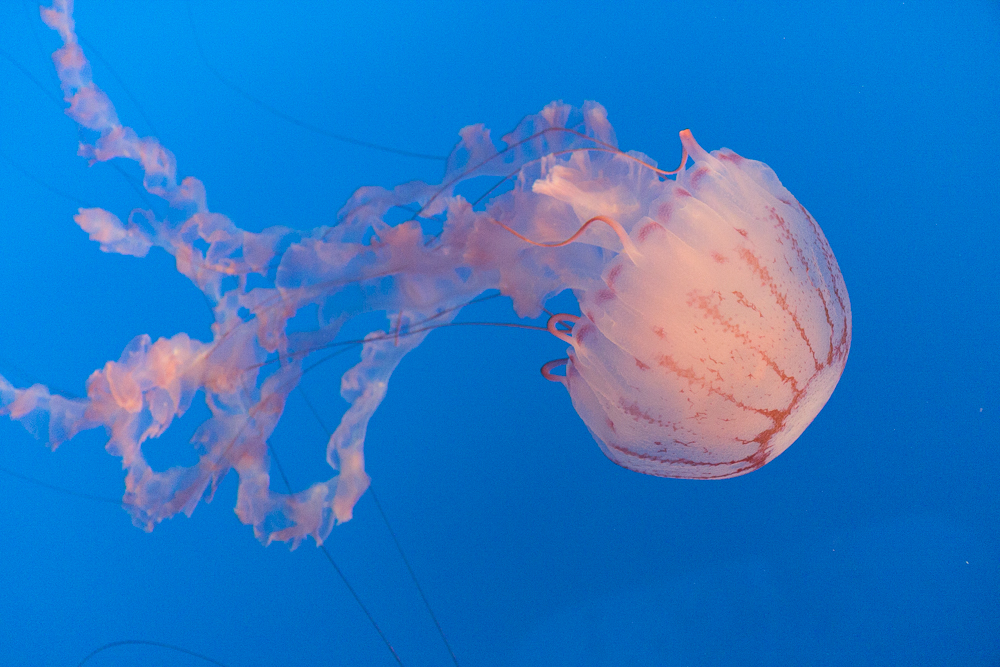
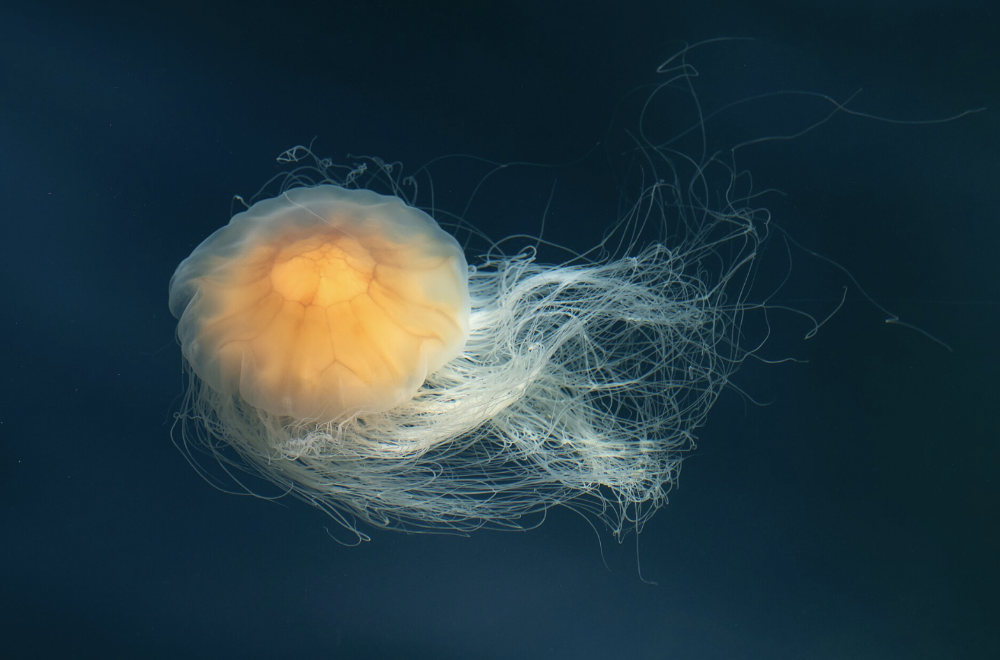
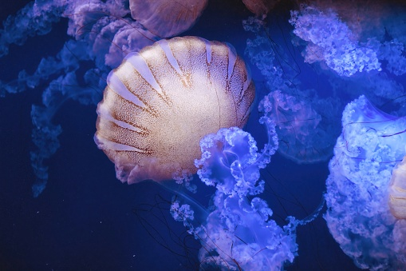

By Emma Sanchez
Jellyfish or otherwise known as sea jellies or just jellies are free swimming marine animals found all over the world from the surface of the ocean to the depths of the ocean.
One characteristic Jellies are known for is their tentacles that they use to sting and paralyze prey. Stings from Jellyfish can be painful or deadly to humans but do not worry as Jellyfish do not attack humans, instead they drift along ocean currents. Most people can be stung when accidentally touching them when scubadiving or when they drift up to shore.
This website contains the Jellywish you should know about.

Real name Chrysaora Colorata, is a jellyfish known for their purple stripes, hence the name. Their body, the bell, is 2'3" in diameter with tentacles ranging in size. Their diet consists of zooplankton, copepoda and fish eggs. Getting stung by this jellyfish is very painful but rare.

Real name Cyanea Capillata, is one of the largest jellyfish species having a bell diameter up to 6'7" (go ahead and laugh). Their lion mane is made up of hundreds of tentacles that resemble close to hair. Their diet consists of zooplankton, fish and smaller jellyfish.

Real name Chrysaora Quinquecirrha, they are radially symmetrical and carnivorous. They measure up to 16" in diameter. When stung they can leave painful rashes, while not deadly the pain can last for 30 minutes.